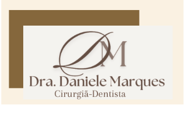
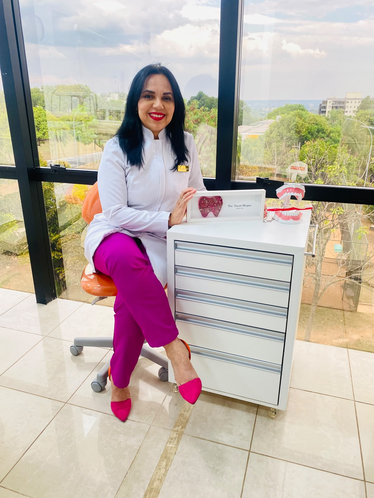
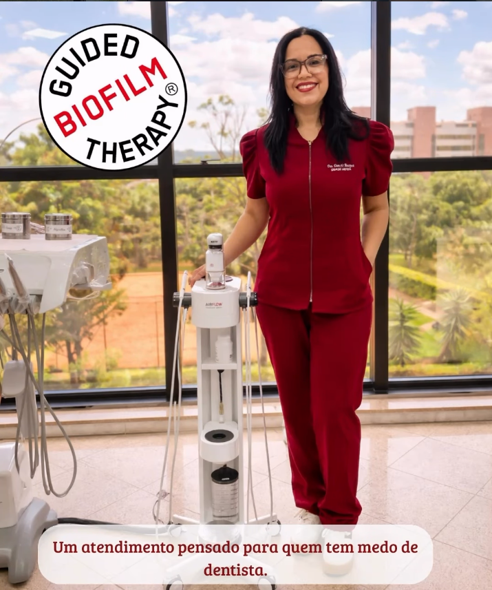
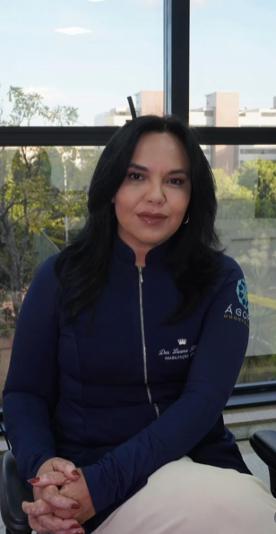

AirFlow (Limpeza Dentária)
Limpeza profunda com o equipamento mais tecnológico da geração, garantindo conforto e eficácia sem dor.
Saiba mais →
A Dra. Daniele Marques acredita que cuidar da saúde bucal vai muito além de tratar dentes. É compreender cada paciente, respeitar sua individualidade e oferecer um atendimento baseado na confiança, na ética e no acolhimento.
Com uma abordagem cuidadosa e atenção aos detalhes, dedica-se a proporcionar tratamentos odontológicos individualizados, priorizando a saúde, o conforto, a funcionalidade e a harmonia do sorriso.
Seu trabalho é pautado na escuta atenta, no planejamento criterioso e na busca constante por conhecimento e recursos que contribuam para a qualidade do atendimento.
Mais do que realizar procedimentos, seu propósito é construir relações de confiança e proporcionar uma experiência odontológica tranquila, segura e humanizada.
"Cuidar de sorrisos é também cuidar de pessoas, histórias e sentimentos."

Avaliação dos pacientes
Excelência e tecnologia em cada procedimento para garantir o seu melhor sorriso.
Limpeza profunda com o equipamento mais tecnológico da geração, garantindo conforto e eficácia sem dor.
Saiba mais →Lentes de contato e facetas de porcelana planejadas para um sorriso natural e radiante.
Diagnóstico preciso e tratamento personalizado para eliminar a dor ao consumir alimentos quentes, frios ou doces.
Check-ups preventivos e manutenção da saúde bucal para toda a família com carinho.
A limpeza dental mais avançada do mundo, agora disponível aqui em Brasília.
O AirFlow é um sistema de limpeza dental de última geração que utiliza um jato de água, ar e pó para remover biofilme, manchas e tártaro de forma rápida, eficaz e praticamente sem desconforto.
Diferente da limpeza tradicional, o AirFlow não usa instrumentos abrasivos, tornando o procedimento muito mais confortável — ideal para quem tem sensibilidade ou medo de dentista.
Agendar AirFlowProcedimento suave que não causa desconforto, ideal para pacientes com sensibilidade dentária.
Remove manchas de café, vinho e cigarro em minutos, com resultado muito superior à limpeza convencional.
Remove 100% do biofilme dental, prevenindo cáries, gengivite e doenças periodontais.
Equipamento EMS certificado, reconhecido mundialmente como o padrão ouro em higiene dental.
Resultado imediato com dentes visivelmente mais limpos e brancos logo após o procedimento.
Baseado em evidências científicas e recomendado pela Guided Biofilm Therapy (GBT).

A Dra. Daniele é especialista certificada em AirFlow e Guided Biofilm Therapy, trazendo o que há de mais moderno para Brasília.

Nossa clínica nasceu do desejo de transformar a experiência odontológica. Combinamos tecnologia de ponta com um atendimento humanizado e acolhedor.
Sob a liderança da Dra. Daniele Marques, Cirurgiã-Dentista apaixonada pelo que faz, nossa equipe se dedica a criar sorrisos que refletem a saúde e a personalidade de cada paciente.
Odontologia com ciência, estética e cuidado real para você.
Veja o que a Amanda achou do seu tratamento com a Dra. Daniele.
A Amanda gravou esse vídeo espontaneamente após sua experiência com a Dra. Daniele — incluindo o procedimento AirFlow e o atendimento humanizado que só ela oferece.
Quero uma experiência assim também →A satisfação dos nossos pacientes é a nossa maior conquista.
"Sensacional a limpeza airflow é um sucesso, sem incômodos ou desconforto. Esqueça a limpeza convencional de antes. O atendimento tranquilo ambientado com música agradável e aromaterapia deixam o procedimento ainda mais espetacular."
"Dra maravilhosa, bem atenciosa e cuidadosa."
"Experiência maravilhosa!! A Drª Daniele muito atenciosa e detalhista. Amei o procedimento. Super recomendooooo! ❤️✨"
"Ja sou cliente da Dra. Daniele faz 3 anos e so tenho elogios. Sempre muito atenciosa e profissional. Ja realizei diversos procedimentos e ficaram perfeitos! Sem falar da organização. Sempre sou notificados pela sua equipe na hora do retorno. O ambiente é perfeito e ela usa uma play list durante os procedimentos que faz toda a diferença!"
A Dra. Daniele responde as perguntas mais comuns dos pacientes.
Conheça os principais sinais de alerta que indicam que você precisa visitar o dentista.
Entenda as causas da sensibilidade dentária e como tratá-la de forma eficaz.
Dicas e indicações práticas da Dra. Daniele para você conquistar um sorriso bonito e saudável.
Descubra como a tecnologia AirFlow revoluciona a limpeza dental e por que ela é diferente.
Venha nos visitar! Estamos no coração do Setor Sudoeste, em Brasília.
Setor Sudoeste SHC/SW CHSW
Centro Clínico, Bloco 04/05 — Sala 216
Brasília - DF, CEP 70673-416
Estacionamento disponível no Centro Clínico. Acesso fácil pelo Setor Sudoeste, próximo à Av. das Nações.